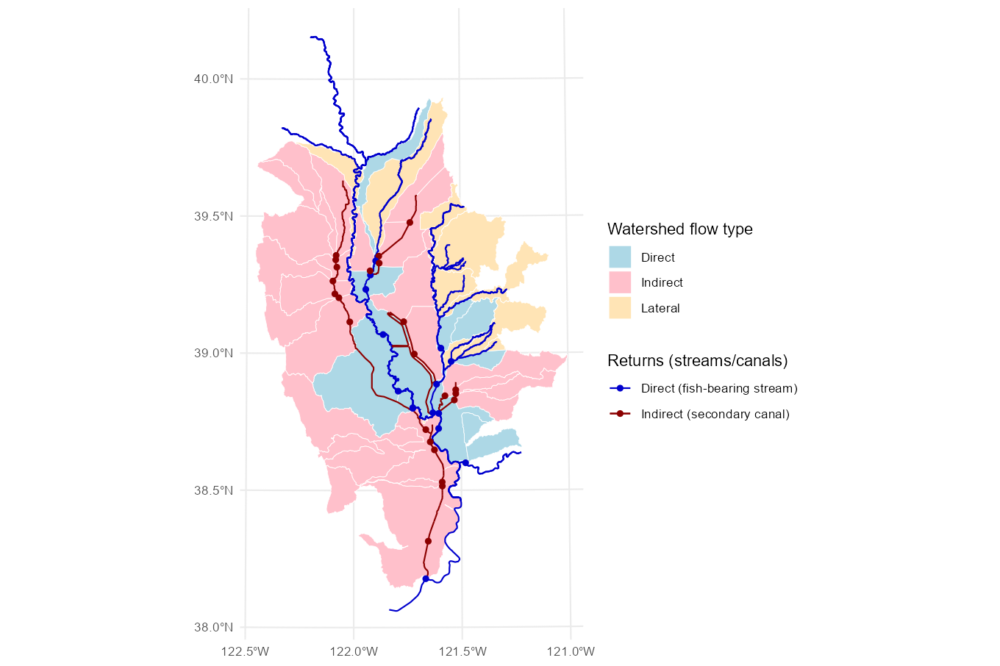
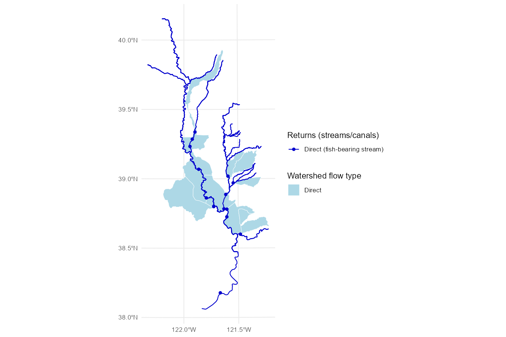
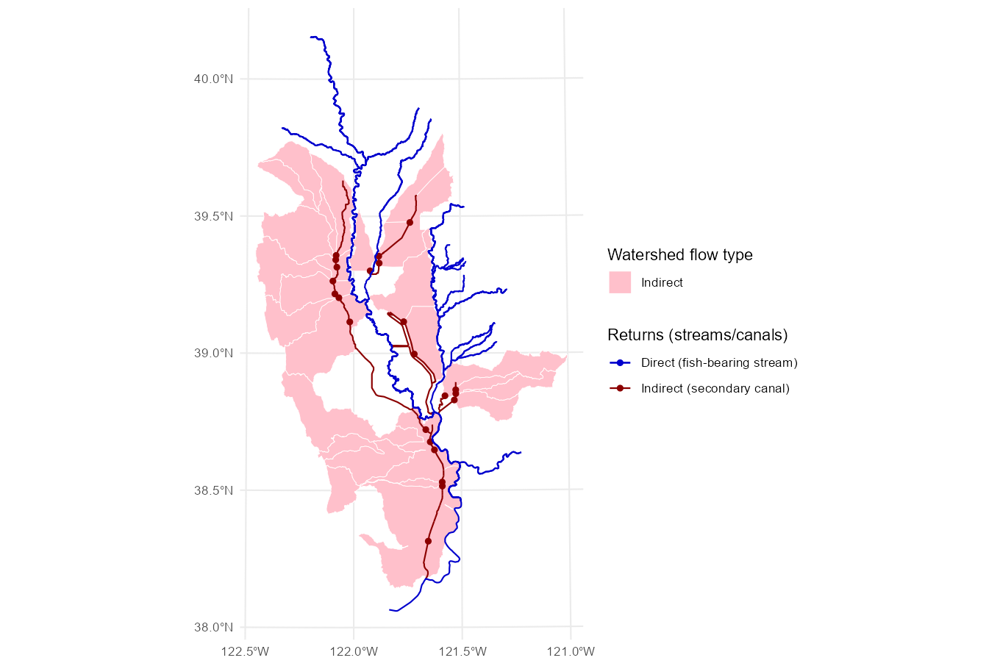
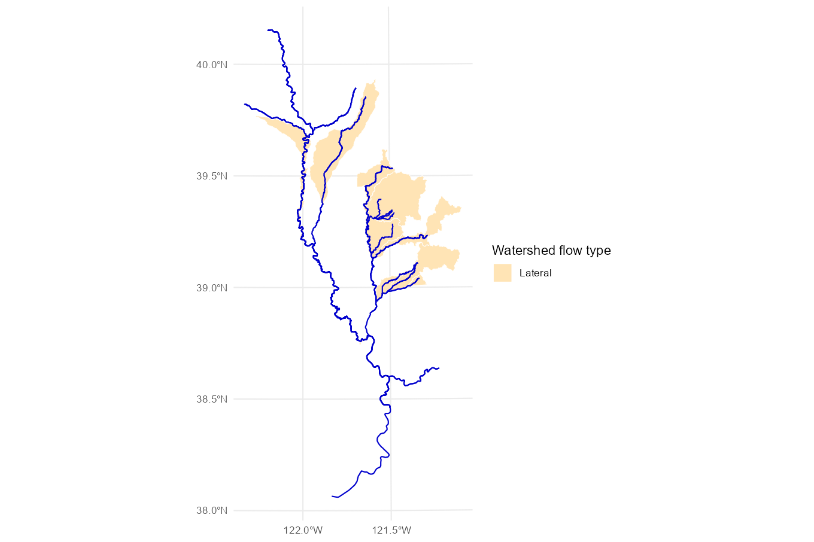
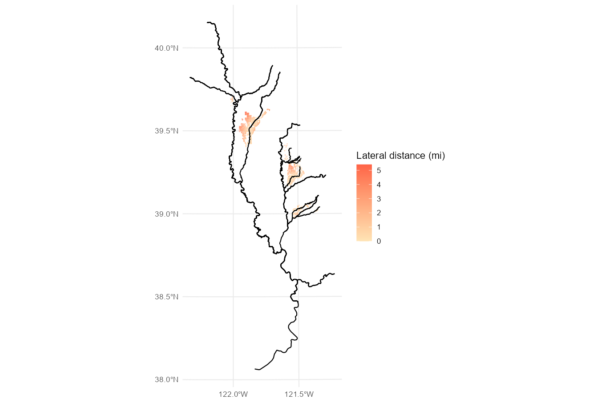
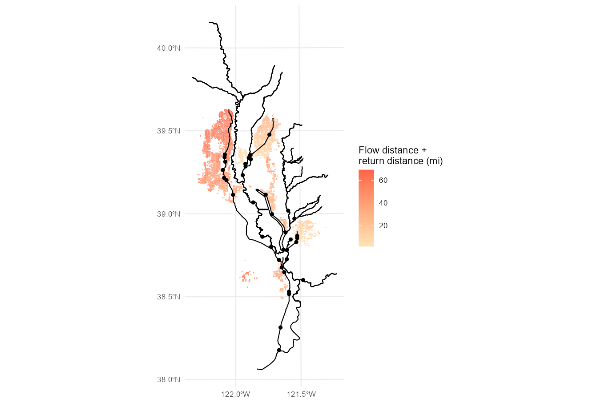
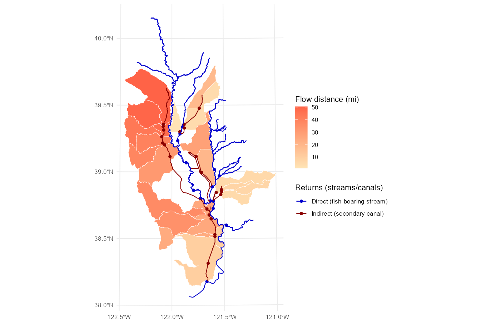
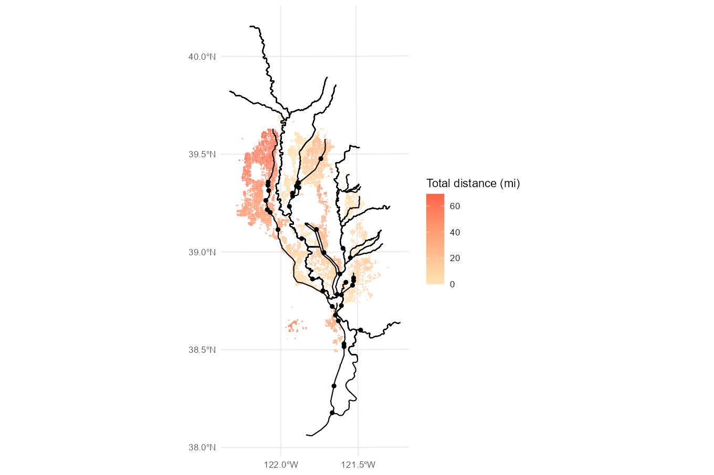
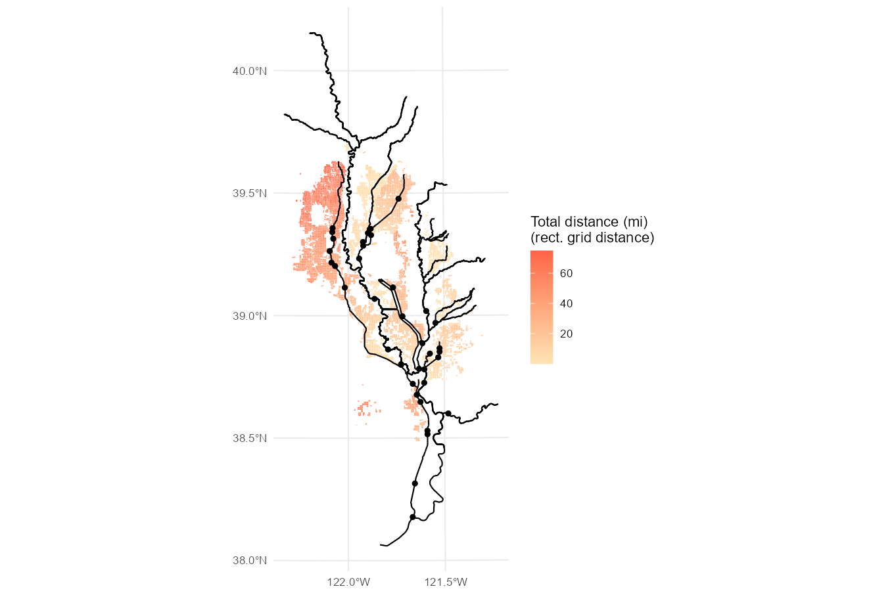
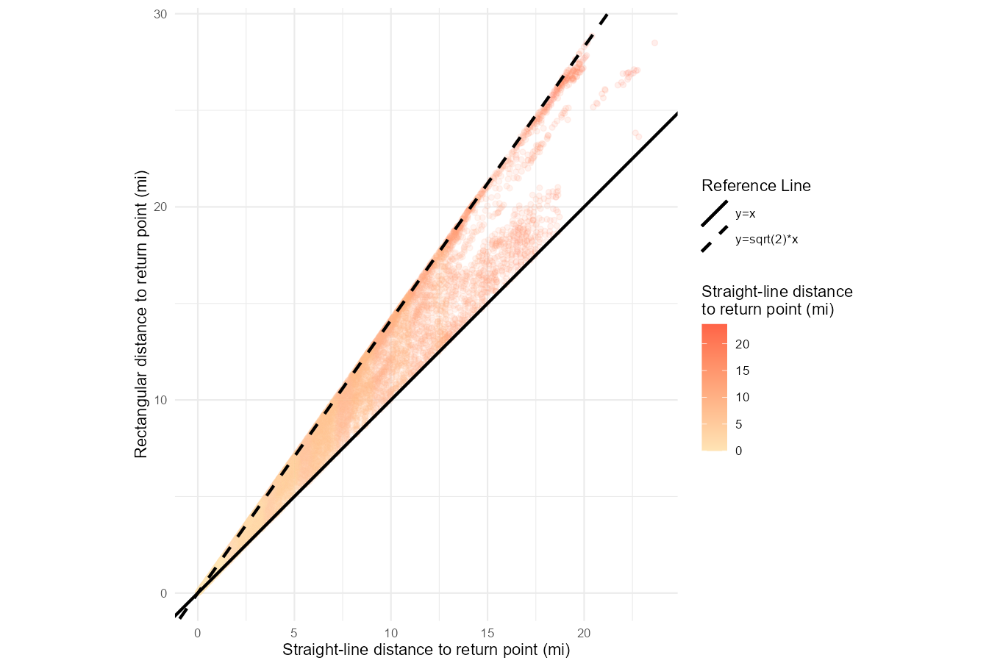

model.RmdThis article describes the approach and methods used to calculate the distances from rice fields to fish-bearing streams.
First, we divided the Sacramento Valley into watersheds based on the National Hydrography Dataset (NHD) HUC-10 watersheds, and further split them as needed after inspection of drainage canal flow patterns.
Each watershed’s outlet is a return into either a major fish-bearing stream, or into a secondary canal that drains into a fish-bearing stream. We identified fish-bearing streams based on prior CVPIA modeling work and expert consultation.

Watersheds draining directly into fish-bearing streams are considered “direct” returns.

Watersheds draining into secondary canals are considered “indirect” returns.

A third set of watersheds, without defined return points, assumed to drain laterally into the fish-bearing stream that they are fronting.

We used the center point (centroid) of each rice field to calculate distance to either its watershed’s return point (for the direct and indirect watersheds) or to the nearest stream (for the lateral flow watersheds). In all cases, straight-line distances provided a simple distance approximation for this planning-level analysis.
For the lateral flow watersheds, straight-line distances were calculated from the field centroid to the nearest fish-bearing stream within the field’s watershed.

For all other watersheds, straight-line distances were calculated from the field centroid to its assigned watershed return point.

Each “indirect” return (the watersheds that flowed indirectly to fish-bearing streams via a seconary canal) also needed the flow distance along the secondary canal from the return point into the downstream fish-bearing stream. These distances were calculated using the actual flow lengths along the canal lines.

Field-to-return point distances were added to the indirect canal flow distances, where applicable, and combined with the lateral flow dataset to produce a final mapping of distances from each rice field to its closest fish-bearing stream.

An alternative “rectangular” distance calculation was also included, using grid distance (east-west plus north-south) rather than straight-line (hypotenuse) distance. At the scale of this analysis, the difference between the two versions is minimal.

The straight-line and rectangular distance measures help to place a lower and upper bound, respectively, on the true flow distance from each rice field to its return point. Except for very circuitous flow paths, all distances should be between these two values. Rectangular distances are never greater than sqrt(2) times the straight-line flow distance, so true return flow distances will not be more than 1.41 times the straight-line approximation used in this study.
